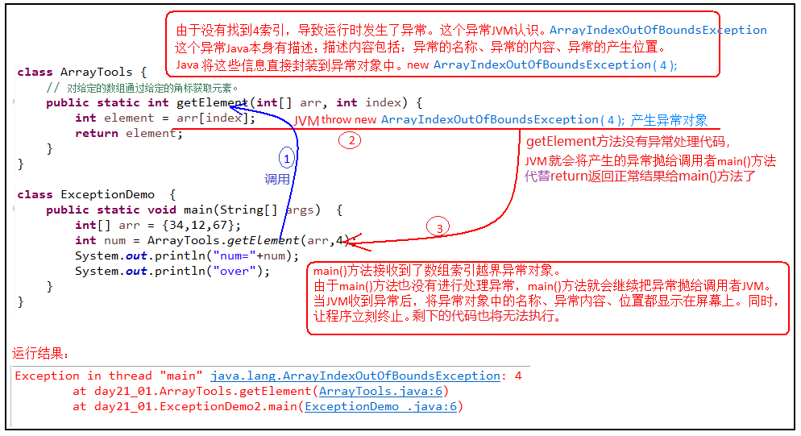
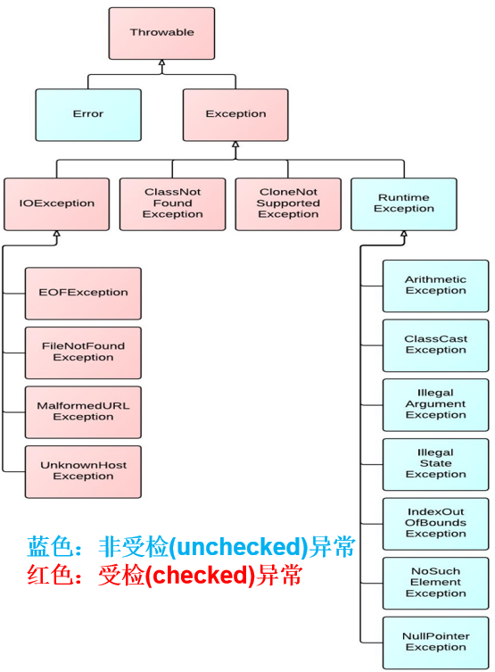
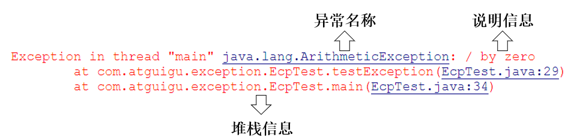
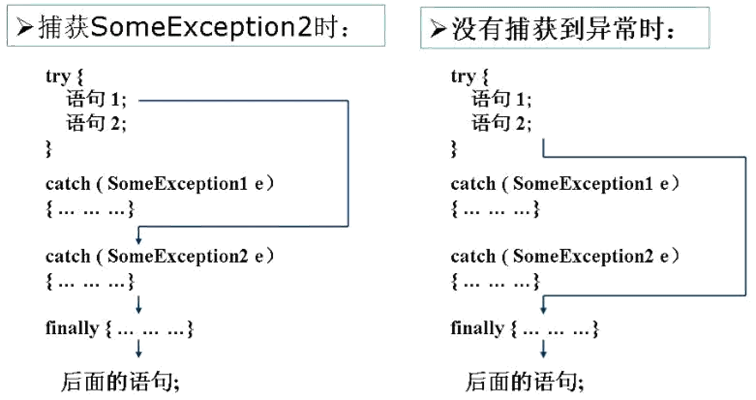

异常概述
什么是程序的异常
- 异常 ：指的是程序在执行过程中，出现的非正常情况，如果不处理最终会导致JVM的非正常停止
异常的抛出机制
- Java中把不同的异常用不同的类表示：
- 一旦发生某种异常，就创建该异常类型的对象，并且抛出（throw）。然后程序员可以捕获(catch)到这个异常对象，并处理；
- 如果没有捕获(catch)这个异常对象，那么这个异常对象将会导致程序终止。

如何对待异常
- 对于程序出现的异常，一般有两种解决方法：
- （1）遇到错误就终止程序的运行
- （2）程序员在编写程序时，就充分考虑到各种可能发生的异常和错误，极力预防和避免。实在无法避免的，要编写相应的代码进行异常的检测、以及异常的处理，保证代码的健壮性。
Java异常体系
Throwable
java.lang.Throwable类是Java程序执行过程中发生的异常事件对应的类的根父类。Throwable可分为两类：Error和Exception。分别对应着
java.lang.Error与java.lang.Exception两个类。Throwable中的常用方法：
public void printStackTrace()：打印异常的详细信息。包含了异常的类型、异常的原因、异常出现的位置、在开发和调试阶段都得使用printStackTrace。public String getMessage()：获取发生异常的原因。
Error
- Java虚拟机无法解决的严重问题。如：JVM系统内部错误、资源耗尽等严重情况。一般不编写针对性的代码进行处理
- 例如：StackOverflowError（栈内存溢出）和OutOfMemoryError（堆内存溢出，简称OOM）。
Exception
- 其它因编程错误或偶然的外在因素导致的一般性问题，需要使用针对性的代码进行处理，使程序继续运行。否则一旦发生异常，程序也会挂掉。例如：
- 空指针访问
- 试图读取不存在的文件
- 网络连接中断
- 数组角标越界
编译时异常和运行时异常
- Java程序的执行分为编译时过程和运行时过程。有的错误只有在运行时才会发生。比如：除数为0，数组下标越界等。根据异常可能出现的阶段，可以将异常分为：
- 编译时期异常（即checked异常、受检异常）：在代码编译阶段，编译器就能明确警示当前代码可能发生（不是一定发生）xx异常，并明确督促程序员提前编写处理它的代码。如果程序员没有编写对应的异常处理代码，则编译器就会直接判定编译失败，从而不能生成字节码文件。通常，这类异常的发生不是由程序员的代码引起的，或者不是靠加简单判断就可以避免的，例如：FileNotFoundException（文件找不到异常）。
- 运行时期异常（即runtime异常、unchecked异常、非受检异常）：在代码编译阶段，编译器完全不做任何检查，无论该异常是否会发生，编译器都不给出任何提示。只有等代码运行起来并确实发生了xx异常，它才能被发现。通常，这类异常是由程序员的代码编写不当引起的，只要稍加判断，或者细心检查就可以避免。
- java.lang.RuntimeException类及它的子类都是运行时异常。比如：ArrayIndexOutOfBoundsException数组下标越界异常，ClassCastException类型转换异常。

常见的错误和异常
Error
- 最常见的就是VirtualMachineError，它有两个经典的子类：StackOverflowError、OutOfMemoryError。
1 | public class TestStackOverflowError { |
1 | public class TestOutOfMemoryError { |
运行时异常
1 | public class TestRuntimeException { |
编译时异常
1 | public class TestCheckedException { |
异常的处理
Java的异常处理的抓抛模型
- 程序在执行的过程当中，一旦出现异常，就会在出现异常的代码处生成对应异常类的对象，并将此对象抛出。这个过程称为抛出(throw)异常。一旦抛出，此程序就不执行其后的代码了。
- 如果一个方法内抛出异常，该异常对象会被抛给调用者方法中处理。如果异常没有在调用者方法中处理，它继续被抛给这个调用方法的上层方法。这个过程将一直继续下去，直到异常被处理。这一过程称为捕获(catch)异常。一旦将异常进行了处理，代码就可以继续执行。
- 如果一个异常回到main()方法，并且main()方法也不处理，则程序运行终止。
方式1：捕获异常（try-catch-finally）
try-catch-finally 概述
- 捕获异常语法基本格式如下：
1 | try{ |
- 整体执行过程：
当某段代码可能发生异常，不管这个异常是编译时异常（受检异常）还是运行时异常（非受检异常），我们都可以使用try块将它括起来，并在try块下面编写catch分支尝试捕获对应的异常对象。
如果在程序运行时，try块中的代码没有发生异常，那么catch所有的分支都不执行。
如果在程序运行时，try块中的代码发生了异常，根据异常对象的类型，将从上到下选择第一个匹配的catch分支执行。此时try中发生异常的语句下面的代码将不执行，而整个try...catch之后的代码可以继续运行。
如果在程序运行时，try块中的代码发生了异常，但是所有catch分支都无法匹配（捕获）这个异常，那么JVM将会终止当前方法的执行，并把异常对象“抛”给调用者。如果调用者不处理，程序就挂了。
try
- 捕获异常的第一步是用
try{…}语句块选定捕获异常的范围，将可能出现异常的业务逻辑代码放在try语句块中。
- 捕获异常的第一步是用
catch (Exceptiontype e)
catch分支，分为两个部分，catch()中编写异常类型和异常参数名，{}中编写如果发生了这个异常，要做什么处理的代码。
如果明确知道产生的是何种异常，可以用该异常类作为catch的参数；也可以用其父类作为catch的参数。
比如：可以用ArithmeticException类作为参数的地方，就可以用RuntimeException类作为参数，或者用所有异常的父类Exception类作为参数。但不能是与ArithmeticException类无关的异常，如NullPointerException（catch中的语句将不会执行）。
每个try语句块可以伴随一个或多个catch语句，用于处理可能产生的不同类型的异常对象。
如果有多个catch分支，并且多个异常类型有父子类关系，必须保证小的子异常类型在上，大的父异常类型在下。否则，报错。
catch中常用异常处理的方式
public String getMessage()：获取异常的描述信息，返回字符串public void printStackTrace()：打印异常的跟踪栈信息并输出到控制台。包含了异常的类型、异常的原因、还包括异常出现的位置，在开发和调试阶段，都得使用printStackTrace()。

使用举例
1 |
|
finally使用及举例

方式2：声明抛出异常类型（throws）
概述
如果在编写方法体的代码时，某句代码可能发生某个
编译时异常，不处理编译不通过，但是在当前方法体中可能不适合处理或无法给出合理的处理方式，则此方法应显示地声明抛出异常，表明该方法将不对这些异常进行处理，而由该方法的调用者负责处理。具体方式：在方法声明中用
throws语句可以声明抛出异常的列表，throws后面的异常类型可以是方法中产生的异常类型，也可以是它的父类。

throws基本格式
1 | 修饰符 返回值类型 方法名(参数) throws 异常类名1,异常类名2…{ } |
throws 使用举例
- 针对于编译时异常
1 | public static void afterClass() throws InterruptedException { |
- 针对于运行时异常
throws后面也可以写运行时异常类型，只是运行时异常类型，写或不写对于编译器和程序执行来说都没有任何区别。如果写了，唯一的区别就是调用者调用该方法后，使用try...catch结构时，IDEA可以获得更多的信息，需要添加哪种catch分支。
方法重写中throws的要求
1 | （1）方法名必须相同 |
- 如果父类被重写方法的方法签名后面没有 “throws 编译时异常类型”，那么重写方法时，方法签名后面也不能出现“throws 编译时异常类型”。
- 如果父类被重写方法的方法签名后面有 “
throws 编译时异常类型”，那么重写方法时，throws的编译时异常类型必须 <= 被重写方法throws的编译时异常类型，或者不throws编译时异常。
两种异常处理方式的选择（经验）
前提：对于异常，使用相应的处理方式。此时的异常，主要指的是编译时异常。
- 如果程序代码中，涉及到资源的调用（流、数据库连接、网络连接等），则必须考虑使用try-catch-finally来处理，保证不出现内存泄漏。
- 如果父类被重写的方法没有throws异常类型，则子类重写的方法中如果出现异常，只能考虑使用try-catch-finally进行处理，不能throws。
- 开发中，方法a中依次调用了方法b,c,d等方法，方法b,c,d之间是递进关系。此时，如果方法b,c,d中有异常，我们通常选择使用throws，而方法a中通常选择使用try-catch-finally。
手动抛出异常对象：throw
概述
- Java 中异常对象的生成有两种方式：
- 由虚拟机自动生成：程序运行过程中，虚拟机检测到程序发生了问题，那么针对当前代码，就会在后台自动创建一个对应异常类的实例对象并抛出。
- 由开发人员手动创建：
new 异常类型([实参列表]);，如果创建好的异常对象不抛出对程序没有任何影响，和创建一个普通对象一样，但是一旦throw抛出，就会对程序运行产生影响了。
格式
1 | throw new 异常类名(参数); |
throw语句抛出的异常对象，和JVM自动创建和抛出的异常对象一样。
如果是编译时异常类型的对象，同样需要使用throws或者try...catch处理，否则编译不通过。
如果是运行时异常类型的对象，编译器不提示。
可以抛出的异常必须是Throwable或其子类的实例。
使用时注意点
无论是编译时异常类型的对象，还是运行时异常类型的对象，如果没有被try..catch合理的处理，都会导致程序崩溃。
throw语句会导致程序执行流程被改变，throw语句是明确抛出一个异常对象，因此它下面的代码将不会执行。
如果当前方法没有try...catch处理这个异常对象，throw语句就会代替return语句提前终止当前方法的执行，并返回一个异常对象给调用者。
自定义异常
为什么需要自定义异常类
Java中不同的异常类，分别表示着某一种具体的异常情况。那么在开发中总是有些异常情况是核心类库中没有定义好的，此时我们需要根据自己业务的异常情况来定义异常类。例如年龄负数问题，考试成绩负数问题，某员工已在团队中等。
如何自定义异常类
（1）要继承一个异常类型
自定义一个编译时异常类型：自定义类继承java.lang.Exception。
自定义一个运行时异常类型：自定义类继承java.lang.RuntimeException。
（2）建议大家提供至少两个构造器，一个是无参构造，一个是(String message)构造器。
（3）自定义异常需要提供serialVersionUID
注意点
自定义的异常只能通过throw抛出。
自定义异常最重要的是异常类的名字和message属性。当异常出现时，可以根据名字判断异常类型。比如：
TeamException("成员已满，无法添加");、TeamException("该员工已是某团队成员");自定义异常对象只能手动抛出。抛出后由try..catch处理，也可以甩锅throws给调用者处理。
小结

Reference
Remark
- xxx需要再深入学习
1 | <font color=red></font> |